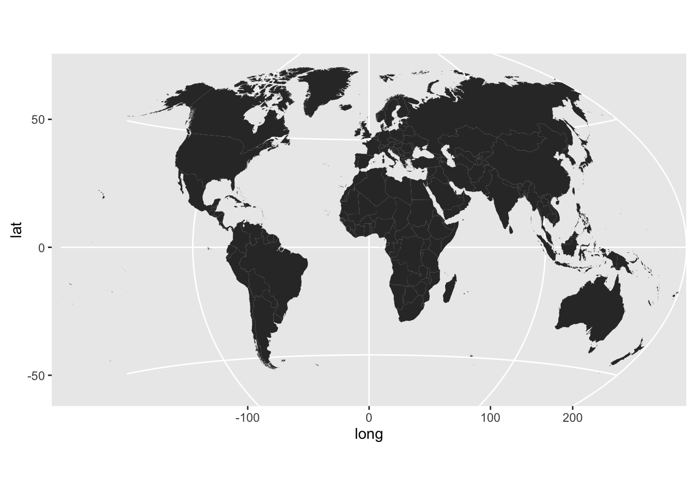

coord_map but uses the PROJ.4 library/package for projection
transformationR/coord_proj.r
coord_proj.RdThe representation of a portion of the earth, which is approximately
spherical, onto a flat 2D plane requires a projection. This is what
coord_proj does, using the proj4::project() function from
the proj4 package.
coord_proj(proj = NULL, inverse = FALSE, degrees = TRUE, ellps.default = "sphere", xlim = NULL, ylim = NULL)
| proj | projection definition. If left |
|---|---|
| inverse | if |
| degrees | if |
| ellps.default | default ellipsoid that will be added if no datum or
ellipsoid parameter is specified in proj. Older versions of PROJ.4
didn't require a datum (and used sphere by default), but 4.5.0 and
higher always require a datum or an ellipsoid. Set to |
| xlim | manually specify x limits (in degrees of longitude) |
| ylim | manually specify y limits (in degrees of latitude) |
A sample of the output from coord_proj() using the Winkel-Tripel projection:

It is recommended that you use geom_cartogram with this coordinate system
When inverse is FALSE coord_proj makes a fairly
large assumption that the coordinates being transformed are within
-180:180 (longitude) and -90:90 (latitude). As such, it truncates
all longitude & latitude input to fit within these ranges. More updates
to this new coord_ are planned.
# NOT RUN { # World in Winkel-Tripel # U.S.A. Albers-style usa <- world[world$region == "USA",] usa <- usa[!(usa$subregion %in% c("Alaska", "Hawaii")),] gg <- ggplot() gg <- gg + geom_cartogram(data=usa, map=usa, aes(x=long, y=lat, map_id=region)) gg <- gg + coord_proj( paste0("+proj=aea +lat_1=29.5 +lat_2=45.5 +lat_0=37.5 +lon_0=-96", " +x_0=0 +y_0=0 +ellps=GRS80 +datum=NAD83 +units=m +no_defs")) gg # Showcase Greenland (properly) greenland <- world[world$region == "Greenland",] gg <- ggplot() gg <- gg + geom_cartogram(data=greenland, map=greenland, aes(x=long, y=lat, map_id=region)) gg <- gg + coord_proj( paste0("+proj=stere +lat_0=90 +lat_ts=70 +lon_0=-45 +k=1 +x_0=0", " +y_0=0 +ellps=WGS84 +datum=WGS84 +units=m +no_defs")) gg # }